Nan Yang / 杨楠
I'm a research scientist at Reality Labs Research, Meta. I pursued my PhD at Technical University of Munich (TUM), supervised by Prof. Daniel Cremers. During my PhD, I was also a senior computer vision engineer at Artisense, a startup co-founded by Prof. Cremers. Prior to my PhD, I obtained my Master’s degree at TUM and my Bachelor’s degree at Beijing University of Posts and Telecommunications.
My research interest is to leverage the power of Deep Neural Networks to overcome the limitations in traditional 3D computer vision and visual SLAM, such as visual odometry, relocalization, and dense mapping.
News
- Mar 2023: Behind the Scenes accepted at CVPR 2023.
- Mar 2022: I've joined Reality Labs Research as a Research Scientist.
- Dec 2021: TANDEM accepted at CoRL 2021 and won the Best Demo Award at 3DV 2021!
- May 2021: Received Outstading Reviewer for CVPR 2021.
- May 2018: Started PhD at CVAI of TUM supervised by Prof. Daniel Cremers.
- Mar 2018: Joined Artisense as a senior computer vision & AI engineer.
Publications
| 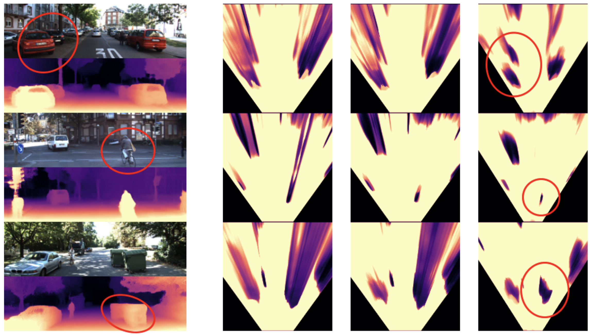 |
Behind the Scenes: Density Fields for Single View Reconstruction
IEEE Conference on Computer Vision and
Pattern Recognition (CVPR), 2023
|
| 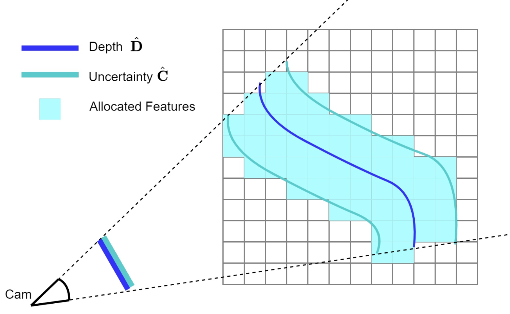 |
Incremental Dense Reconstruction from Monocular Video with Guided Sparse
Feature Volume Fusion
IEEE Robotics and Automation Letters
(RA-L), 2023
|
| 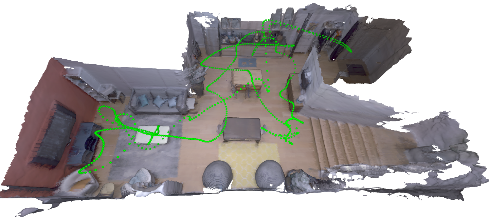 |
TANDEM: Tracking and Dense Mapping in Real-time using Deep Multi-view
Stereo
Conference on Robot Learning (CoRL),
2021
Best Demo Award at 3DV 2021
|
| 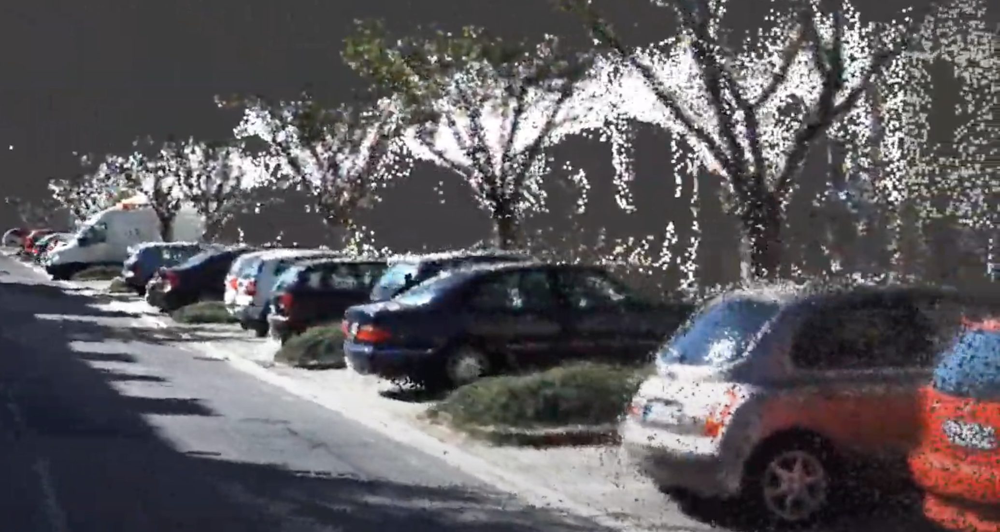 |
MonoRec: Semi-Supervised Dense Reconstruction in Dynamic Environments
from a Single Moving Camera
IEEE Conference on Computer Vision and
Pattern Recognition (CVPR), 2021
|
| 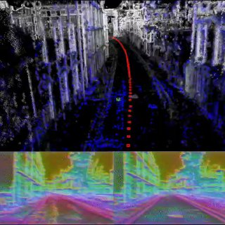 |
LM-Reloc: Levenberg-Marquardt Based Direct Visual Relocalization
International Conference on 3D Vision
(3DV), 2020
|
| 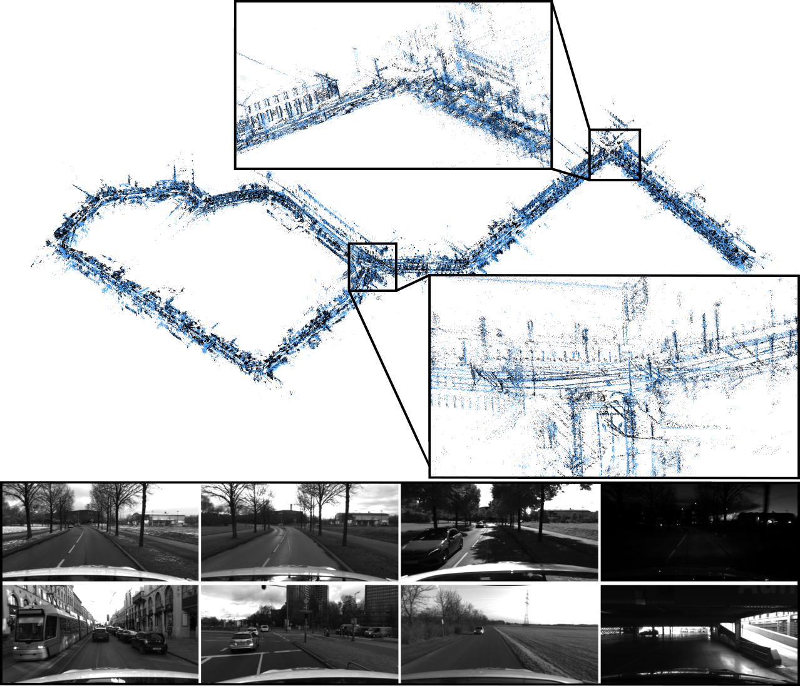 |
4Seasons: A Cross-Season Dataset for Multi-Weather SLAM in Autonomous
Driving
German Conference on Pattern Recognition
(GCPR), 2020
|
| 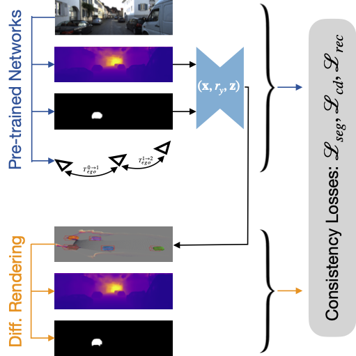 |
Learning Monocular 3D Vehicle Detection without 3D Bounding Box Labels
German Conference on Pattern Recognition
(GCPR), 2020
|
 |
D3VO: Deep Depth, Deep Pose and Deep Uncertainty for Monocular Visual
Odometry
IEEE Conference on Computer Vision and
Pattern Recognition (CVPR), 2020
Oral Presentation
|
| 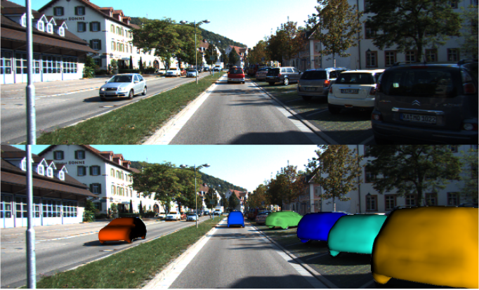 |
DirectShape: Photometric Alignment of Shape Priors for Visual Vehicle
Pose and Shape Estimation
IEEE International Conference on Robotics
and Automation (ICRA), 2020
|
| 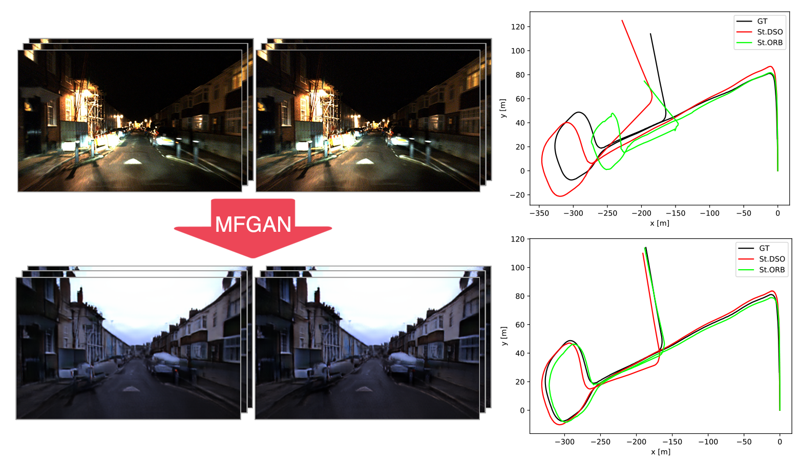 |
Multi-Frame GAN: Image Enhancement for Stereo Visual Odometry in Low
Light
Conference on Robot Learning (CoRL),
2019
Full Oral Presentation
|
| 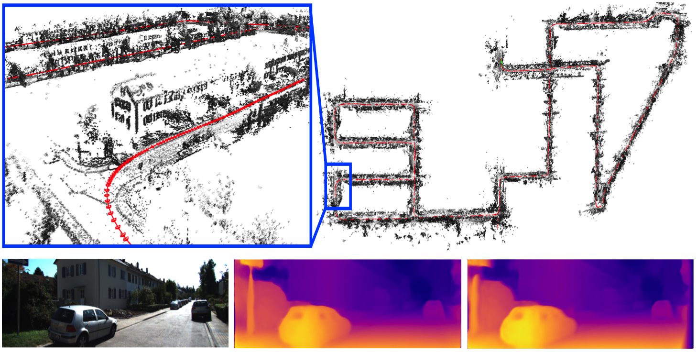 |
Deep Virtual Stereo Odometry: Leveraging Deep Depth Prediction for
Monocular Direct Sparse Odometry
European Conference on Computer Vision
(ECCV), 2018
Oral Presentation
|
| 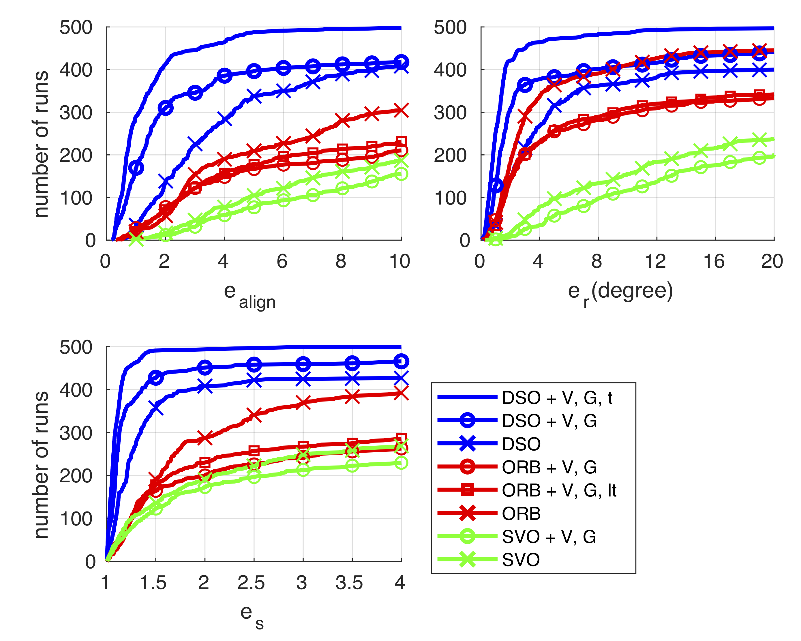 |
Challenges in Monocular Visual Odometry: Photometric Calibration, Motion
Bias and Rolling Shutter Effect
IEEE Robotics and Automation Letters (RA-L)
& Int. Conference on Intelligent Robots and Systems (IROS), 2018
|
Reviewer
- Computer Vision: CVPR, ECCV, ICCV
- Machine Learning: ICLR, AAAI, NeurIPS, PR
- Robotics: ICRA, IROS, RA-L, AURO, ISPRS, T-RO
- Computer Graphics: SIGGRAPH